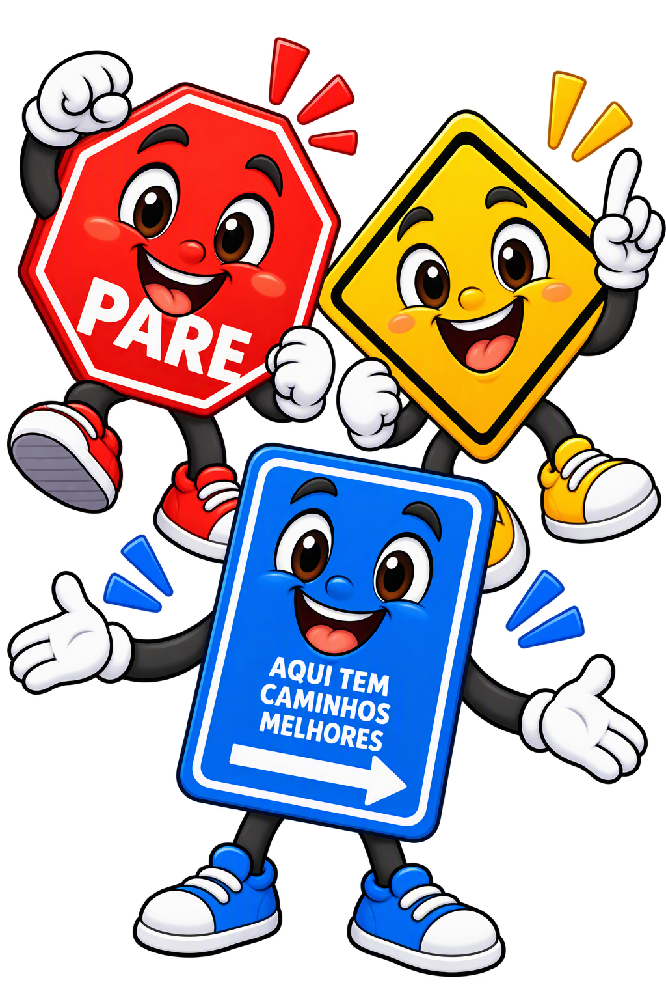

Missão: atravessar com cuidado
PareZinho
Ensina a parar, olhar para os dois lados e atravessar na faixa.
“Na faixa, a gente para, olha e atravessa com atenção!”
Aprender brincando · 7 a 17 anos
Venha descobrir caminhos mais seguros com PareZinho, Alertinha e Avisônio. Eles vão guiar cada missão!

Seu time de guias
Escolha uma missão e aprenda com quem entende de segurança no caminho.
Ensina a parar, olhar para os dois lados e atravessar na faixa.
“Na faixa, a gente para, olha e atravessa com atenção!”

Ajuda a perceber semáforos, placas, bicicletas e veículos ao redor.
“Olhos atentos: a rua sempre dá sinais importantes!”

Mostra como pedestres, passageiros e ciclistas podem se proteger.
“Capacete, cinto e boas escolhas levam mais longe!”
Desafio dos mascotes
Uma pergunta por vez. Escolha uma resposta para descobrir o que os mascotes acharam.